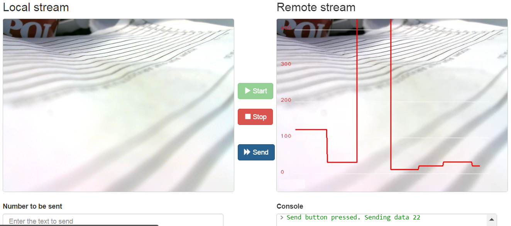

Developers Guide¶
This documents provides information how to develope the MultisensoryDataModule (MsData).
Clone repository:
sudo apt-get install git
git clone https://github.com/nubomedia-vtt/msdata.git
Create a folder to build the MsData
mkdir build
cd build
Kurento Client Interface¶
Now you have an option to generate either Java or JavaScript interface for the Kurento Client (or naturally both if you need)
Java version
cmake .. -DGENERATE_JAVA_CLIENT_PROJECT=TRUE
JavaScript version
cmake .. -DGENERATE_JS_CLIENT_PROJECT=TRUE
Developing Source Code¶
To use the compiled results in Kurento just set into:
/etc/default/kurento-media-server-6.0
for example:
NAME=$(logname)
export KURENTO_MODULES_PATH=$KURENTO_MODULES_PATH:/home/$NAME/nubomedia/msdata/build
export GST_PLUGIN_PATH=$GST_PLUGIN_PATH:/home/$NAME/nubomedia/msdata/builds
MsData Interface ie Data Pads¶
Both MsData and the filter that utilized MsData through data pads must naturally agree on the data that is delivered but flexible interface between modules is enabled. As a consequence functionality of the MsData can be increased without affecting the MsData interface.
Data Channel Demo¶
As an example about utilization of MsData with data channel, familiarize with a graph demo , ie ‘Hello World App’, which sends user defined data for drawing a graph.
The media pipeline is done with the following structure:
KmsMsData kmsMsData = new KmsMsData.Builder(mediaPipeline).build();
webRtcEndpoint.connect(kmsMsData);
kmsMsData.connect(webRtcEndpoint);
Currently the functionality is driven through interpretation of the given data. Explicit functionality can be added as necessary. The current implementation interprets the given data as a series of integers that are visualized as a graph. There are plans to develop some new applications which might eg instead of series of integers utilize JSON as data in the future.